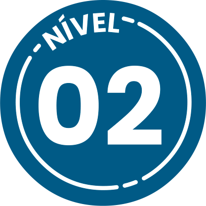
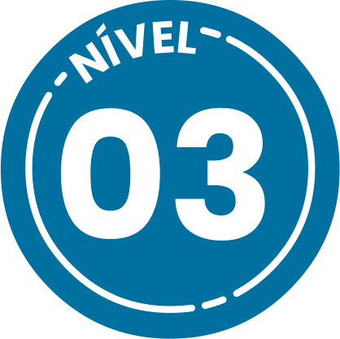

Nesse contexto, é importante
destacar
que o Sistema Único de Saúde (SUS) é um dos maiores e mais complexos
sistemas de saúde do mundo e que atende, igualmente, as pessoas privadas de liberdade. A oferta de
serviços
na rede SUS acontece por níveis.
Clique nos números para compreender
esses
níveis.



O primeiro nível – atenção primária – é a
porta de entrada para o SUS. Esse nível é
composto, especialmente, das Unidades
Básicas de Saúde (UBSs). Na atenção
primária, as ações são direcionadas à
redução do risco de doenças e à proteção
da saúde, isso significa que o primeiro nível
possui também um aspecto preventivo.
O segundo nível – atenção secundária
– é constituído pelos serviços de saúde
especializados ofertados em hospitais,
ambulatórios e Unidades de Pronto
Atendimento (UPAs).
O terceiro nível de atenção à saúde
– atenção terciária – se ocupa
com os atendimentos mais
complexos que são realizados em
hospitais de grande porte.